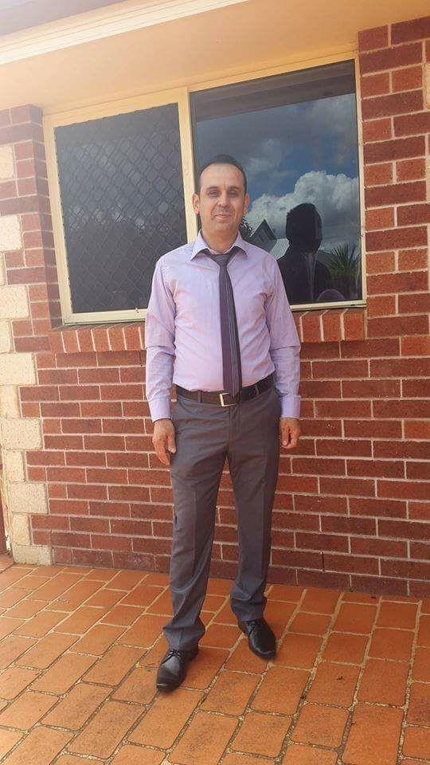

Mixing between engineering and IT
"Graduation is not the end, but rather the beginning of a lifelong journey towards knowledge, growth, and success."
Little bit about me
My name is Ramiz Ibraheem Saeed, and I'm passionate about helping others and fostering cross-cultural connections. With a background in Mechanical Engineering, holding Bachelor's, Master's, and PhD degrees, I'm currently pursuing an IT diploma to broaden my skill set.
Teaching MATLAB, engineering principles, and numerical analysis techniques has fueled my desire for continuous growth. I'm drawn to applied engineering programs like CFD, solid modeling, AutoCAD, image processing, and Arduino microcontroller system interface data acquisition, which have inspired my foray into web development, web design, and software programming.
My goal is to contribute to technological advancements and innovative solutions, making a positive impact on society. Programming is integral in today's world, powering computers, homes, transportation, and more. It enables fast, accurate, and optimal outcomes while opening doors to fields like data analysis and artificial intelligence.
Embrace the journey of learning, for knowledge is the key. Stay curious, persistent, and guided by the saying, "The mind of the wise acquires knowledge, and the ear of the wise seeks knowledge." Programming holds endless possibilities, ready to shape a brighter future.
My work
Icing Jet Project

L_Nitrogen valve

Fiberglass work